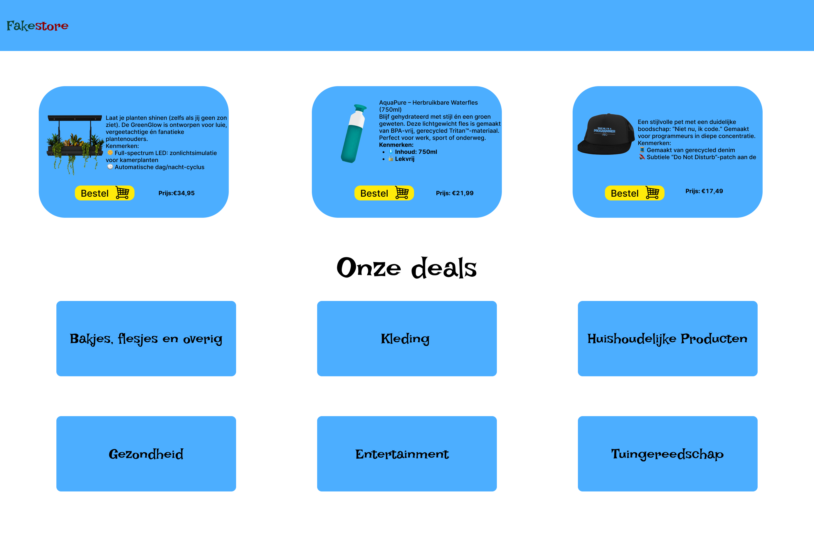
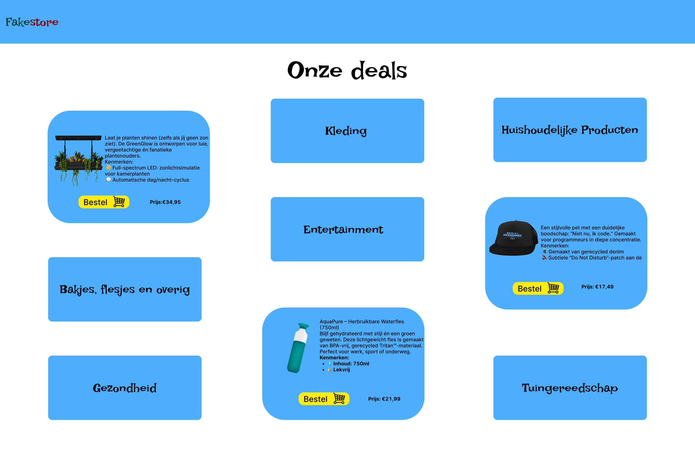
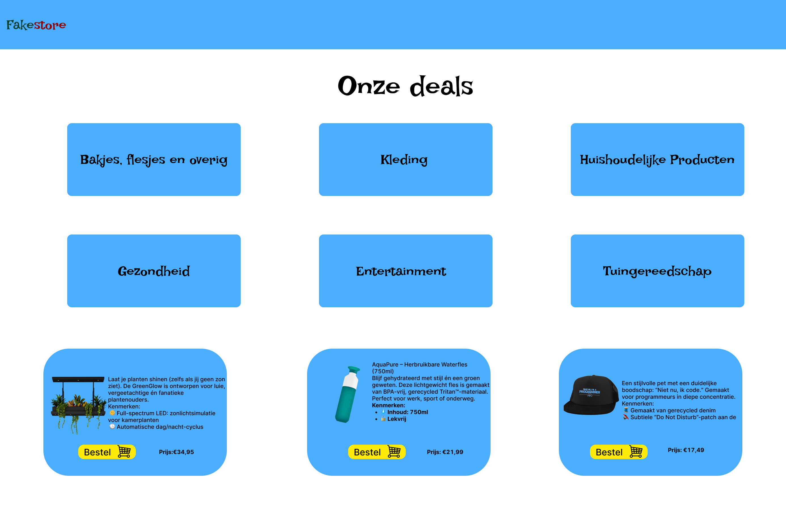
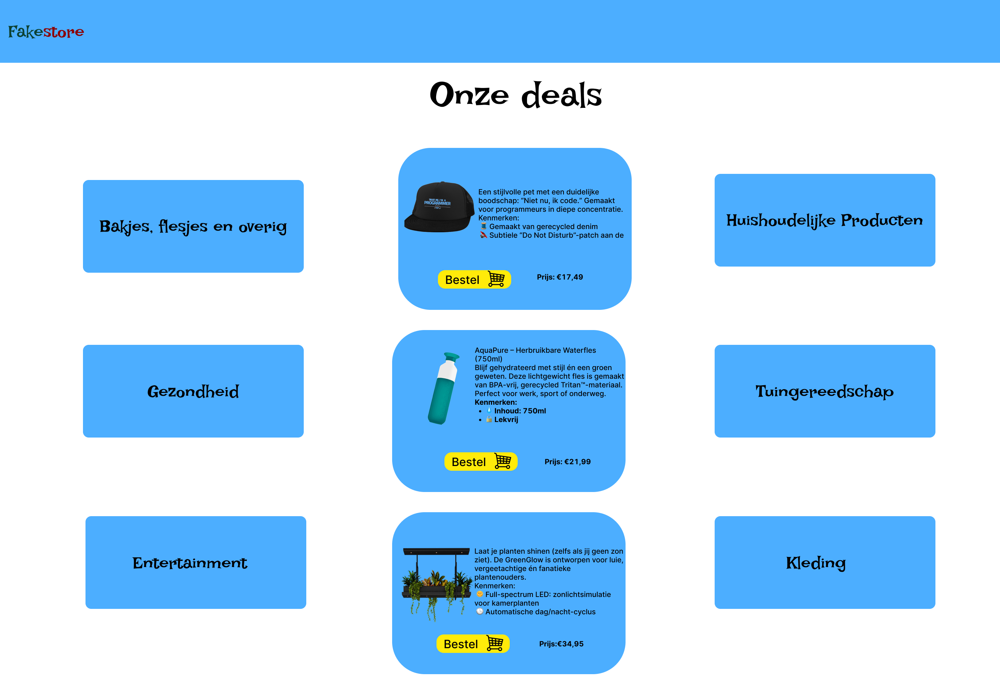
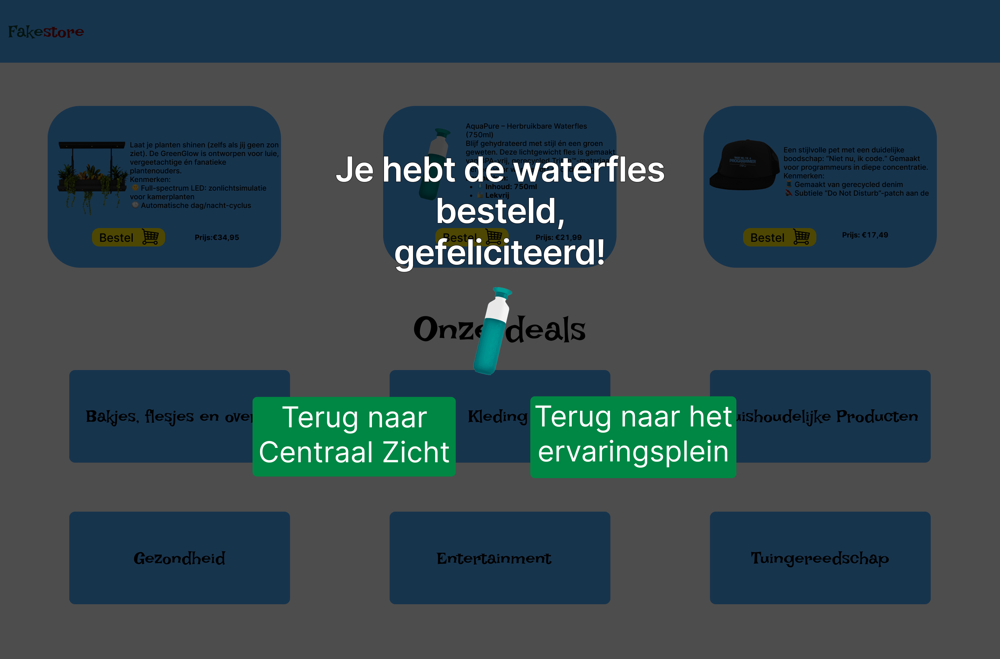
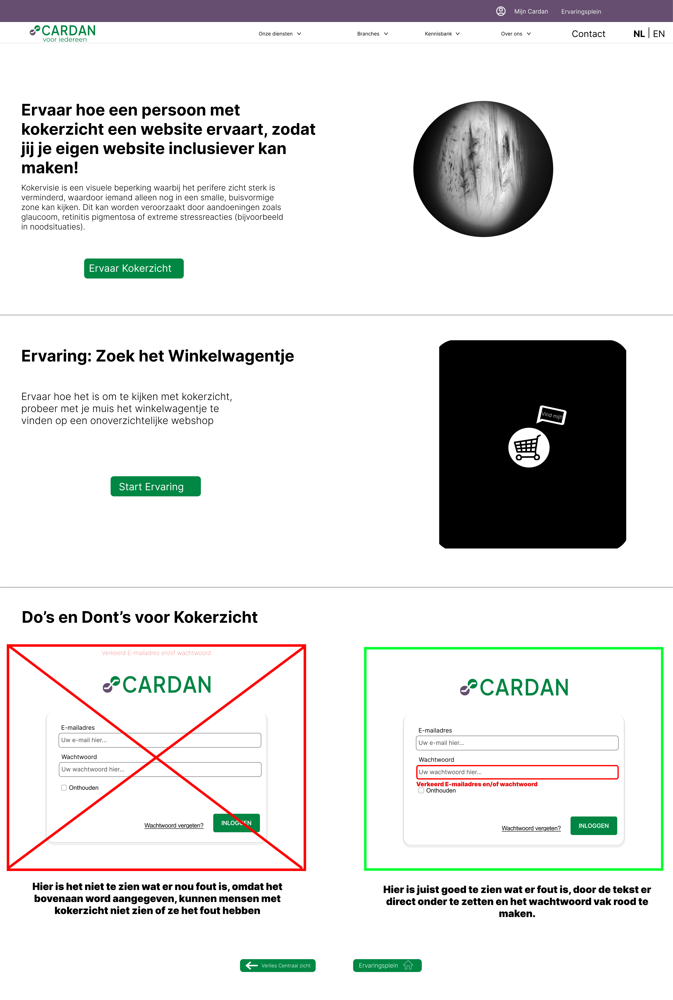
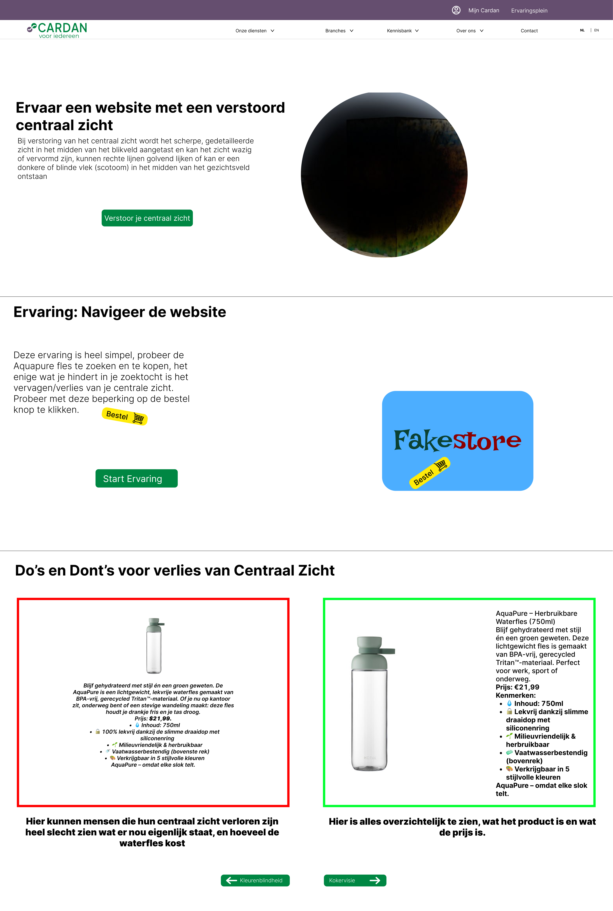

Menu
Voor het Create-That-UX project hebben we de opdracht gekregen van Cardan om hun fysieke ervaring over digitale toegankelijkheid te digitaliseren. Denk aan kleurenblindheid, verlies van centraal zicht, kokerzicht, en volledige blindheid. Het doel van Cardan is om op deze manier meer mensen er bewust van te maken hoe het is om met zo'n beperking te leven en websites te navigeren. Dit loopt dan weer gelijk met de europeese accessibility act die juni 2025 ingaat, waardoor alle websites toegankelijk moeten zijn voor iedereen, voor ons dus de taak om hun fysieke ervaring te digitaliseren.
Voor dit project hebben we als groep een projectplan opgesteld met hoe we dit project gaan aanpakken en wat we gaan doen om het uiteindelijke project te realizeren,
Dit projectplan is een belangrijk onderdeel van het project, omdat het ons helpt om onze ideeën te structureren en de voortgang van het project te volgen.
Bekijk ProjectplanIn de eerste weken van het project heb ik verschillende designrichtingen onderzocht om visuele beperkingen zo goed mogelijk te kunnen simuleren. Hierbij was het belangrijk dat het design zowel visueel impactvol als technisch haalbaar zou zijn. Door gebruik te maken van overlays en contrastreductie konden ik bijvoorbeeld simuleren hoe een gebruiker met kokerzicht of verlies van centraal zicht een website ervaart.
De ontwerpen voor kokerzicht en centraalzicht zijn gebaseerd op bestaande simulaties van deze aandoeningen. Deze simulaties zijn gemaakt door Cardan, denk aan brillen die deze beperkingen simuleren. Zo is bij kokerzicht alleen het centrale deel van de website zichtbaar, terwijl de rest van het scherm zwart is. Dit dwingt de gebruiker om zich volledig te concentreren op een kleine cirkel van informatie, wat zorgt voor frustratie en verwarring — precies het punt van de ervaring. Bij verlies van centraal zicht hebben ik juist het midden wazig of onzichtbaar gemaakt, waardoor navigeren extreem lastig wordt. Ik merkten dat deze ervaring meteen tot gesprekken leidde over hoe ontoegankelijk veel websites zijn als je zelfs maar een klein visueel obstakel hebt.
In de feedbackrondes werd ook duidelijk dat onze eerste ontwerpen vooral als "proof of concept" dienden. Ze boden een sterke visuele basis, maar er ontbrak nog interactie of context. Daarom hebben ik ze later uitgebreid met meer gebruikssituaties, bijvoorbeeld op een webshop. Dit maakte het niet alleen realistischer, maar ook herkenbaarder voor de gebruiker.
.png)
Kokerzicht Overlay

Kokerzicht Pagina

Centraalzicht Overlay

Centraalzicht Pagina
Voor het ontwerpen van de ervaringen heb ik me sterk laten inspireren door de bestaande huisstijl en structuur van de officiële website van Cardan. Omdat het doel van dit project was om hun fysieke beleving van digitale toegankelijkheid om te zetten naar een online ervaring, vond ik het belangrijk dat de simulaties naadloos aansluiten op hun visuele identiteit en gebruikerservaring.
De huidige website van Cardan is opgebouwd met een rustige en toegankelijke interface. Er wordt veel gebruik gemaakt van witruimte, grote klikbare elementen en contrastrijke kleuren — allemaal belangrijke elementen binnen toegankelijk webdesign. Deze uitgangspunten heb ik bewust meegenomen in mijn eigen ontwerpen, zodat de overstap van de officiële website naar de simulaties logisch aanvoelt voor gebruikers.
Daarnaast bevat de Cardan-website veel informatieve content over verschillende soorten beperkingen, trainingen en tools. Dit informatieve karakter heb ik doorgetrokken in de ervaringen door korte tekstuele toelichtingen toe te voegen bij iedere stap van de simulatie. Zo blijft de gebruiker niet alleen ‘doen’, maar ook leren.
Waar de originele site natuurlijk geen interactieve ervaringen aanbiedt, bieden onze ontwerpen een verdieping die Cardan in de toekomst zou kunnen integreren in hun online aanwezigheid. De stijl, navigatie en algemene look & feel sluiten aan op wat Cardan al gebruikt, maar voegen daar een unieke en ervaringsgerichte laag aan toe. Op die manier vormen de ontwerpen geen losstaande simulaties, maar een mogelijke uitbreiding van het bestaande Cardan-platform.

Voorbeeld van de Cardan landingpagina
Om de digitale ervaring van visuele beperkingen tastbaar te maken, heb ik designs voor interactieve minigames. Deze zijn gericht op het simuleren van beperkingen als kokerzicht en centraalzicht.

Kokerzicht Info Pagina

Minigame Startpagina

Minigame Optie 1

Minigame Optie 2

Minigame Optie 3

Minigame Optie 4

Minigame Optie 5

Minigame Einde
In het begin noemden we onze ontwerpen vaak ‘minigames’, omdat ze interactieve elementen bevatten waarbij de gebruiker iets moest doen — klikken, scrollen, keuzes maken. Tijdens een feedbackmoment met Carolien van Cardan kregen ik echter te horen dat die term niet goed past bij de boodschap die ik willen overbrengen.
Daarom hebben we ervoor gekozen om onze ontwerpen geen ‘minigames’ meer te noemen, maar ervaringen. Die benadering past veel beter bij het doel: niet vermaken, maar bewust maken. In plaats van iets wat je ‘speelt’, is het nu iets wat je meemaakt.
Voor zowel kokerzicht als verlies van centraal zicht heb ik nieuwe simulaties gemaakt die gebruikers in een herkenbare situatie plaatsen — bijvoorbeeld op een webshop. Daar wordt meteen duidelijk hoe lastig simpele dingen kunnen worden, zoals een product zoeken, tekst lezen of op de juiste knop klikken. Zo ervaar je pas echt hoe frustrerend en beperkend het kan zijn.
De ervaringen focussen zich op twee vormen van visuele beperking: kokerzicht en verlies van centraal zicht. In beide simulaties plaatsen ik de gebruiker in een herkenbare online context — een webshop — zodat de obstakels en frustraties op een directe en begrijpelijke manier voelbaar worden.
In deze simulatie wordt het zichtveld van de gebruiker drastisch beperkt, waardoor alleen het midden van het scherm nog zichtbaar is. Dit zorgt ervoor dat navigeren lastig wordt: belangrijke knoppen vallen buiten het gezichtsveld, tekst is moeilijk vindbaar, en scrollen wordt verwarrend. Het dwingt de gebruiker om bewuster te kijken, en maakt duidelijk hoe belangrijk overzicht en duidelijke structuur zijn in een toegankelijke website.
Deze ervaring bootst een situatie na waarbij het midden van het zichtveld wegvalt, terwijl de randen nog wel enigszins zichtbaar zijn — een situatie zoals bij maculadegeneratie. De gebruiker ziet dus alleen de zijkanten van de pagina, maar mist precies het deel waar normaal gesproken knoppen, producttitels of belangrijke navigatie staat. Dit zorgt voor desoriëntatie en laat zien hoe onbruikbaar een site kan zijn als deze niet ontworpen is met toegankelijkheid in gedachten.
Beide ervaringen zijn bedoeld om bewustwording te creëren bij ontwerpers, developers en andere betrokkenen. Door letterlijk in de schoenen van iemand met een visuele beperking te stappen, ontstaat er niet alleen meer begrip, maar ook meer motivatie om inclusieve keuzes te maken in het ontwerpproces. Bij beide ervaringen word de ervaring nagebotst door van de muis een overlay te maken die de gebruiker kan verslepen, zodat de gebruiker zelf kan ervaren hoe het is om met deze beperking te navigeren. Dit maakt het niet alleen visueel, maar ook interactief.

Kokerzicht ervaring optie 1

Kokerzicht ervaring optie 2

Kokerzicht ervaring optie 3

Kokerzicht ervaring optie 4

Kokerzicht ervaring einde
Kokerzicht ervaring voorbeeld

Verlies van centraalzicht ervaring optie 1

Verlies van centraalzicht ervaring optie 2

Verlies van centraalzicht ervaring optie 3

Verlies van centraalzicht ervaring optie 4

Verlies van centraalzicht ervaring uitslag
Centraalzicht ervaring voorbeeld
Hieronder zijn de twee volledige pagina's te zien van de pagina's die ik voor Cardan ontworpen heb. Met behulp van de Cardan website heb ik deze pagina laten lijken alsof het zo op de Cardan website past.

Volledige weergave van de kokerzicht pagina

Volledige weergave van de centraalzicht pagina
Hier is het Figma bestand te openen die ik gebruikt hebben om onze designs tijdens dit project te realiseren, hier is ook te zien dat tijdens het ontwerpen ik de pagina Design Kokerzicht en Centraal Zicht heb gebruikt om mijn designs tot leven te brengen, het uiteindelijke eindproduct staat op de pagina 'Presenteren'. Het proces van het designen ging eigenlijk vrij makkelijk er zijn enkele revisies geweest, alleen de plek van de ervaringen en de do's en dont's waren eerst omgewisseld, maar na feedback gevraagd te hebben van verschillende groepsgenoten hebben ik besloten om dit format te gebruiken
Bekijk Figma